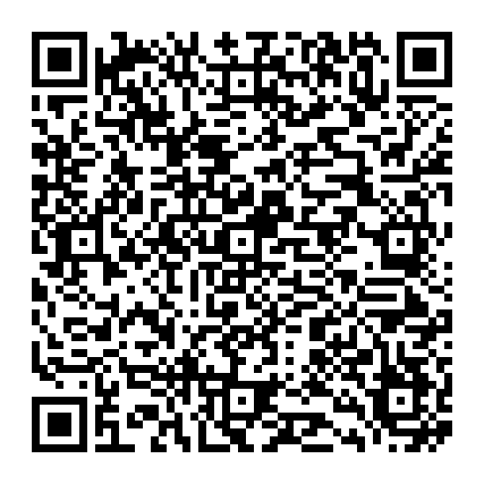
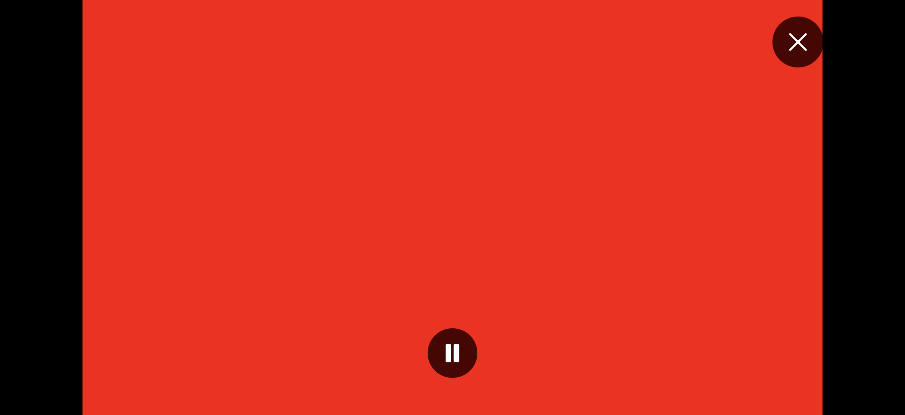

TV 가로 모드 · 전체화면 검은 화면 수정. 실기기 확인용 시험 빌드.

iOS 17.0 이상. SideStore에서 서명해 설치합니다. 기존 앱을 삭제하지 않고 같은 Apple 계정으로 업데이트하세요.
Build97은 재생 중인 영상 뷰를 유지한 채 세로·가로·전체화면 사이에서 이동하도록 수정했습니다. 회전할 때 전체화면 창이 제거되지 않으며, 닫은 뒤 원래 화면으로 돌아옵니다.
기존 아이폰 배치·세그먼트·게인 계산·Build92 잡음 수정과 Build96의 Android 300C r52/r53 이식 기능은 유지합니다.
기존 방식의 검은 화면을 재현한 뒤 수정본을 비교했습니다. 가로 회전·전체화면 진입과 복귀·백그라운드 복귀·채널 전환의 영상 픽셀 및 음성 출력 검사, 기존 기능 검사를 포함하여 총 496개 검증이 통과했습니다.

위 이미지는 실제 네이티브 영상 컴포넌트를 사용하는 iPhone 시뮬레이터 테스트 화면입니다. 빨간색은 검은 화면과 구분하기 위한 HLS 시험 영상이며, 방송 화면이나 앱 전체 배치 미리보기가 아닙니다.
사용 중인 iOS 27 실기기의 SideStore 설치와 방송별 가로·전체화면 동작은 별도 확인이 필요합니다.
SHA-2562d457370152ef2aeba85791fc4944acef6558758c23fbcad0ad534e9bc839b3c